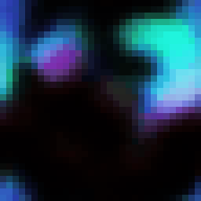
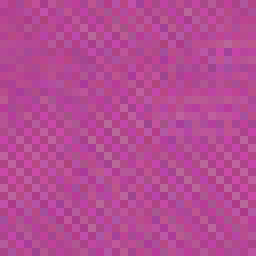
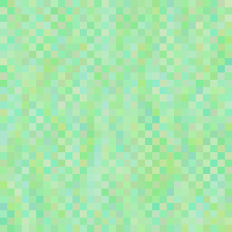

Neuromusical Cellular Automata
Play the piano to explore the space of Neural Cellular Automata. Each note samples a latent space which then generates an NCA on the fly!
The demo above generates a unique Neural Cellular Automaton for each sound you play. The NCA runs in real-time, creating evolving patterns based on the audio's spectral fingerprint, and facilitates the exploration of an embeddings space of NCAs through music.
How to Play
- Piano keys: Click or use keyboard (A-L for white keys, W/E/R/Y/U/O/P for black keys). Each note loads a different latent vector that generates a unique NCA.
- Chords: Hold multiple keys to blend their latents together, creating hybrid dynamics.
- Instruments: Use the dropdown to switch between piano, violin, guitar, and more. Each instrument produces distinct visual behaviors.
- Perturbation: Defaults to max. Press number keys 1-9 to reduce, or 0 for max. Higher values create more chaotic, unpredictable patterns. Press the same key twice to toggle off.
- Random Latent: Click "Random Latent" to explore completely random points in the learned space.
Gallery
Here are some examples of beautiful self-stabilizing patterns found in the space of Neuromusical Cellular Automata. Set the Perturbation level high or use to the Random Latent button to discover more. You'll see interesting smokey fluid dynamics, shifting colors, and even shapes that appear to be swirling in 3D!
 |
 |
 |
 |
 |
 |
 |
 |  |
Random NCAs
In contrast to the above NCAs sampled from a learned latent space (so that we are navigating a particularly interesting and beautiful region of NCA parameter space), most of NCA space is more boring and tends to collapse to blank or static patterns:
 |
 |  |
Why This Project
I have always been fascinated by neural cellular automata (and CAs in general) as they are like little physics engines for tiny virtual universes. So when I started this project I spun up a little NCA editor where I could adjust the architecture and parameter weights of NCAs to explore the space. I found some pretty neat settings, but it turns out to be pretty difficult to find anything interesting by randomly navigating parameter space!
This got me thinking about the embeddings space of NCA parameters, and how we could explore it. To get a smoother and hopefully more interesting embedding space, I decided to train a neural network to generate NCA parameters from a conditioned latent space.
In this way, I've ended up with a neural network (a hypernetwork) that generates neural networks (NCAs) from a latent space, how cool! Being a musician, I eventually came to the idea of constraining the encoder to the space of musical notes from various instruments, which allows us to use music to explore the embedding space, which is very fun.
Cellular Automata
Cellular automata are systems of simple cells on a grid, each updating its state based on neighboring values. Classic examples like Conway's Game of Life show how complex global behavior can emerge from purely local rules.
Whereas Conway's Game of Life is the application of one possible update rule, we can think of the space of all possible rules as the set of all state transition functions for a given neighborhood, which could be listed in a (beyond astronomically massive) lookup table. For example a binary CA where the update rule depends on the Moore neighborhood has 2^1024 possible rules (there are 9 cells in a neighborhood + the center cell's new state, which gives us 2^10 (1024) entries per rule). Each entry maps the 9-cell states at time t to the center cell's state at time t+1.

Neural Cellular Automata (NCA) replace the discrete update rules of CAs with a small neural network, allowing the system to learn its own dynamics from data. A neural network reads local values and outputs updated values for the next time step, which is fed back into the network at time t+1. This makes an NCA effectively a recurrent CNN! NCAs can learn to grow, regenerate, and sustain surprisingly complex dynamical patterns.
The space of all possible NCAs is infinite*, even for a constrained neighborhood, because there are an infinite number of neural network architectures we could apply. For a fixed architecture, we can think of the "embedding space" of all possible parameter values. Typically, this space is pretty sparse and boring, producing mostly noise or blank outputs (although I did randomly stumble upon the "rainbow gliders" shown above - stable little colorful blobs that move!).
*While the number of possible NCA architectures is truly unbounded (we can always add another layer), the number of distinguishable transition functions is finite: the inputs and outputs are encoded with finite-precision floating point. Many different architectures and parameter settings will produce identical behavior. The space is astronomically vast but ultimately discrete, appearing continuous to us.
Hardware Constraints
I landed on the following architecture, which is extremely tiny because I want this to run in realtime in the browser on a CPU, and I needed a fast turn-around time for experiments.

Architecture Details
VAE Encoder (Context Frames → Latent)
- Input: context frames, 32×32
- Conv layers: 12→32→64→128, each 3×3 kernel, stride 2, BatchNorm, LeakyReLU(0.2)
- Flatten: 128 × 4 × 4 = 2,048 features
- Two linear heads (μ and σ): 2,048 → 64 each
- Output: 64-dimensional latent vector z
HyperNetwork (Latent → NCA Weights)
- Input: 64-dim latent
- MLP: 64 → 256 → 256 → 4,640, with LayerNorm + ReLU
- Output: weights for 2-layer NCA (2×[16×16×3×3] + 2×[16] = 4,640 params)
NCA (Grid Evolution)
- Grid: 16 channels (3 RGB visible + 13 hidden state)
- Layer 1: 16→16 channels, 3×3 conv, circular padding, ReLU
- Layer 2: 16→16 channels, 3×3 conv, circular padding, residual add
- Parameters generated per-sample by HyperNetwork
Learned Latent Space
Instead of exploring the embedding space of random parameter values, we can learn a latent space and use that to generate NCAs. And that's what the Neuromusical Cellular Automata does.
Because this latent space is learned it can be much smoother and more semantically meaningful than exploring the raw space of NCA parameters. Of course, what the latent space actually learns is entirely dependent on the data used to train the model.
Dynamics
Because NCAs are recurrent, they can learn dynamics and movement. Here is an example of a model trained on sequences of frames from dynamic simulations. Given a few context frames as input, the model learns to predict how the system evolves over time. Each training sequence captures a different behavior, forcing the model to internalize the underlying rules of motion rather than memorizing individual frames.
The ground truth is shown on the right with the model predictions on the left:


As you can see, the NCA does capture the general size, color, and motion of the objects, although it tends to blur over time as it struggles to guess the exact next frame. This is a classic problem for sequence prediction in continuous space, and could probably be rectictfied with diffusion or other techniques. But remember this is a tiny little network because it needs to run in realtime on a CPU and train in reasonable time. And anyway, I kind of like how the objects smear out over time and generate interesting patterns - it makes the latent space more surprising.
Music
The training data for the Neuromusical Cellular Automata and the demo at the top of this page is generated by pairing audio with deterministic visualizations.

For each instrument sample (piano, violin, etc.), we extract audio features: detected harmonics, loudness (RMS), and spectral brightness. These features drive the "circles" visualization where each harmonic becomes a colored circle - low frequencies appear warm (red/orange) near the center, high frequencies appear cool (blue) toward the edges. Circle size pulses with loudness, and positions orbit based on harmonic relationships.

The first frame of each training sequence is a mel spectrogram (a 2D image of frequency vs. time), which the encoder compresses into a 64-dimensional latent vector. The decoder, a hypernetwork, transforms this latent into NCA weights that generate the subsequent circle animation frames.

For the piano interface, we pre-generate spectrograms for all 19 notes (F4 through B5) across every instrument. Each spectrogram is encoded into its latent vector and stored in a manifest. When you press a piano key, the corresponding latent is loaded; pressing multiple keys (a chord) averages their latents together. This blended latent then generates the NCA in real-time, creating visualizations that interpolate between the learned behaviors of each note.
Realtime Exploration
This demo combines two separately trained models:
- Encoder: From the spectrogram-to-NCA model used in the piano demo above
- Hypernetwork: From a new model trained to generate emoji (or rather to generate NCAs which generate emoji)
The idea is to explore whether we can use music and sound to navigate the space of possible NCAs, even when the hypernetwork wasn't jointly trained with spectrograms. Your microphone audio gets converted to a spectrogram, encoded to a latent vector, and that latent drives the emoji NCA's dynamics in real-time.
Try making sounds with different textures: humming, clapping, whistling, or playing different instruments. Each sound creates a unique spectrogram that drives the NCA dynamics.
With enough experimentation it's possible to find recognizable emoji in the above demo. The spectrogram encoder's latent space doesn't match what the emoji hypernetwork expects, but I trained a simple MLP to project between the manifolds of the two latent spaces. I'd like to experiment with different methods to make the projection more obviously meaningful (but we'd likely need networks powerful enough to actually represent that meaning).
Still, what makes this interesting is that we're navigating a structured region of NCA parameter space. The hypernetwork constrains the outputs to "plausible" cellular automata, and the audio encoder provides a consistent way to explore that space. Different sounds produce different dynamics, and you can discover regularities.
For reference, here's what the hypernetwork (and its generated NCAs) produces with its matching encoder:
Future Potential
This approach opens several interesting directions:
- The latent space could be conditioned on higher-level concepts, allowing semantic control over the generated dynamics
- Larger grids and deeper NCAs, and more interesting training data could capture more complex phenomena
- The ability for NCAs to track/produce agentic behavior on the grid is particularly fascinating
- Visualizing and analyzing the hidden channels of the NCA grid to find out more about how the visible RGB channels are computed, which would be especially interesing in the case of agentic behavior
Agentic behavior
I did some early experiments with boids exhibiting various behaviors such as flocking or predator-prey dynamics, but this proved too challenging for my tiny 2-layer conv nets. It would be fascinating to see if an NCA could learn theory of mind to generate the behaviors of simple agents. A more ambitious goal would be to model human player actions in Atari games, or even more complex environments and life-like behaviors from nature itself.
Sound as Navigation
Broadly, music offers a compelling interface for exploring high-dimensional latent spaces. The simple visualizations used here map audio features to color and motion, but richer correspondences are possible. We could learn a deeper semantic structure: tension and resolution in a symphony, the texture of a jazz improvisation, or the chaos of city and forest soundscapes all provide meaningful ways of steering through latent space.
Open Ended
The combination of neural cellular automata with learned latent spaces suggests a fascinating paradigm: compact, local update rules that are themselves generated by a learned model, producing an open-ended family of emergent systems from a single trained network.
Bonus: Game of Life
As an experiment, I trained the same NCA architecture on Conway's Game of Life—a cellular automaton that is famously Turing complete. The NCA successfully learned to emulate the Game of Life rules, correctly simulating gliders, oscillators, and chaotic patterns.

Left: NCA prediction. Right: Ground truth.
This result demonstrates that our tiny 2-layer NCA architecture has sufficient expressive power to encode the complete Game of Life transition function. Since the Game of Life is Turing complete, this means our NCA setup is capable of universal computation, and it's learnable, neat!